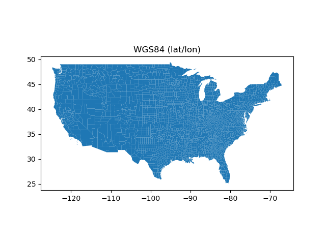
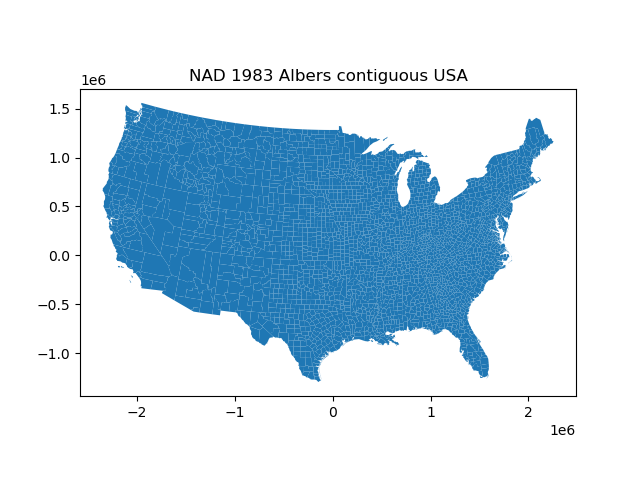

Projections#
Coordinate reference systems#
The coordinate reference system (CRS) is important because the geometric shapes in a GeoSeries or GeoDataFrame object are simply a collection of coordinates in an arbitrary space. A CRS tells Python how those coordinates relate to places on the Earth.
For reference codes of the most commonly used projections, see spatialreference.org.
The same CRS can often be referred to in many ways. For example, one of the most
commonly used CRS is the WGS84 latitude-longitude projection. This can be
referred to using the authority code "EPSG:4326".
GeoPandas can accept anything accepted by pyproj.CRS.from_user_input():
CRS WKT string
An authority string (i.e. “epsg:4326”)
An EPSG integer code (i.e. 4326)
An object with a to_wkt method.
PROJ string
Dictionary of PROJ parameters
PROJ keyword arguments for parameters
JSON string with PROJ parameters
For reference, a few very common projections and their EPSG codes:
WGS84 Latitude/Longitude: EPSG:4326
UTM Zones (North): EPSG:32633
UTM Zones (South): EPSG:32733
What is the best format to store the CRS information?#
Generally, WKT or SRID’s are preferred over PROJ strings as they can contain more information about a given CRS. Conversions between WKT and PROJ strings will in most cases cause a loss of information, potentially leading to erroneous transformations. If possible WKT2 should be used.
For more details, see What is the best format for describing coordinate reference systems.
Setting a projection#
There are two relevant operations for projections: setting a projection and re-projecting.
Setting a projection may be necessary when for some reason GeoPandas has coordinate data (x-y values), but no information about how those coordinates refer to locations in the real world. Setting a projection is how one tells GeoPandas how to interpret coordinates. If no CRS is set, GeoPandas geometry operations will still work, but coordinate transformations will not be possible and exported files may not be interpreted correctly by other software.
Be aware that most of the time you don’t have to set a projection. Data loaded from a reputable source (using the geopandas.read_file() command) should always include projection information. You can see an objects current CRS through the GeoSeries.crs attribute.
From time to time, however, you may get data that does not include a projection. In this situation, you have to set the CRS so GeoPandas knows how to interpret the coordinates.
For example, if you convert a spreadsheet of latitudes and longitudes into a
GeoSeries by hand, you would set the projection by passing the WGS84
latitude-longitude CRS to the GeoSeries.set_crs() method (or by setting
the GeoSeries.crs attribute):
my_geoseries = my_geoseries.set_crs("EPSG:4326")
my_geoseries = my_geoseries.set_crs(epsg=4326)
Re-projecting#
Re-projecting is the process of changing the representation of locations from one coordinate system to another. All projections of locations on the Earth into a two-dimensional plane have distortions. See Which projection is best for more information. The projection that is best for your application may be different from the projection associated with the data you import. In these cases, data can be re-projected using the GeoDataFrame.to_crs() command:
In [1]: import geodatasets
# load example data
In [2]: usa = geopandas.read_file(geodatasets.get_path('geoda.natregimes'))
# Check original projection
# (it's Plate Carrée! x-y are long and lat)
In [3]: usa.crs
Out[3]:
<Geographic 2D CRS: EPSG:4326>
Name: WGS 84
Axis Info [ellipsoidal]:
- Lat[north]: Geodetic latitude (degree)
- Lon[east]: Geodetic longitude (degree)
Area of Use:
- name: World.
- bounds: (-180.0, -90.0, 180.0, 90.0)
Datum: World Geodetic System 1984 ensemble
- Ellipsoid: WGS 84
- Prime Meridian: Greenwich
# Visualize
In [4]: ax = usa.plot()
In [5]: ax.set_title("WGS84 (lat/lon)");
# Reproject to Albers contiguous USA
In [6]: usa = usa.to_crs("ESRI:102003")
In [7]: ax = usa.plot()
In [8]: ax.set_title("NAD 1983 Albers contiguous USA");


Projection for multiple geometry columns#
GeoPandas 0.8 implements support for different projections assigned to different geometry columns of the same GeoDataFrame. The projection is now stored together with geometries per column (directly on the GeometryArray level).
Note that if GeometryArray has an assigned projection, it cannot be overridden by an another inconsistent projection during the creation of a GeoSeries or GeoDataFrame:
>>> array.crs
<Geographic 2D CRS: EPSG:4326>
Name: WGS 84
Axis Info [ellipsoidal]:
- Lat[north]: Geodetic latitude (degree)
- Lon[east]: Geodetic longitude (degree)
...
>>> GeoSeries(array, crs=4326) # crs=4326 is okay, as it matches the existing CRS
>>> GeoSeries(array, crs=3395) # crs=3395 is forbidden as array already has CRS
ValueError: CRS mismatch between CRS of the passed geometries and 'crs'. Use 'GeoSeries.set_crs(crs, allow_override=True)' to overwrite CRS or 'GeoSeries.to_crs(crs)' to reproject geometries.
GeoSeries(array, crs=3395).crs
If you want to overwrite the projection, you can then assign it to the GeoSeries
manually or re-project geometries to the target projection using either
GeoSeries.set_crs(epsg=3395, allow_override=True) or
GeoSeries.to_crs(epsg=3395).
All GeometryArray-based operations preserve projection; however, if you loop over a column containing geometry, this information might be lost.
Upgrading to GeoPandas 0.7 with pyproj > 2.2 and PROJ > 6#
Starting with GeoPandas 0.7, the .crs attribute of a GeoSeries or GeoDataFrame
stores the CRS information as a pyproj.CRS, and no longer as a proj4 string
or dict.
Before, you might have seen this:
>>> gdf.crs
{'init': 'epsg:4326'}
while now you will see something like this:
>>> gdf.crs
<Geographic 2D CRS: EPSG:4326>
Name: WGS 84
Axis Info [ellipsoidal]:
- Lat[north]: Geodetic latitude (degree)
- Lon[east]: Geodetic longitude (degree)
...
>>> type(gdf.crs)
pyproj.crs.CRS
This gives a better user interface and integrates improvements from pyproj and PROJ 6, but might also require some changes in your code. See this blogpost for some more information. The subsections below cover different possible migration issues.
See the pyproj documentation for more on
the pyproj.CRS object.
Importing data from files#
When reading geospatial files with geopandas.read_file(), things should
mostly work out of the box. For example, reading the example countries dataset
yields a proper CRS:
In [9]: df = geopandas.read_file(geodatasets.get_path('naturalearth.land'))
In [10]: df.crs
Out[10]:
<Geographic 2D CRS: EPSG:4326>
Name: WGS 84
Axis Info [ellipsoidal]:
- Lat[north]: Geodetic latitude (degree)
- Lon[east]: Geodetic longitude (degree)
Area of Use:
- name: World.
- bounds: (-180.0, -90.0, 180.0, 90.0)
Datum: World Geodetic System 1984 ensemble
- Ellipsoid: WGS 84
- Prime Meridian: Greenwich
However, in certain cases (with older CRS formats), the resulting CRS object might not be fully as expected. See the section below for possible reasons and how to solve it.
Manually specifying the CRS#
When specifying the CRS manually in your code (e.g., because your data has not yet a CRS, or when converting to another CRS), this might require a change in your code.
“init” proj4 strings/dicts
Currently, a lot of people (and also the GeoPandas docs showed that before) specify the EPSG code using the “init” proj4 string:
## OLD
GeoDataFrame(..., crs={'init': 'epsg:4326'})
# or
gdf.crs = {'init': 'epsg:4326'}
# or
gdf.to_crs({'init': 'epsg:4326'})
The above will now raise a deprecation warning from pyproj, and instead of the “init” proj4 string, you should use only the EPSG code itself as follows:
## NEW
GeoDataFrame(..., crs="EPSG:4326")
# or
gdf.crs = "EPSG:4326"
# or
gdf.to_crs("EPSG:4326")
proj4 strings/dicts
Although a full proj4 string is not deprecated (as opposed to the “init” string above), it is still recommended to change it with an EPSG code if possible.
For example, if you know the EPSG code for the projection you are using, instead of:
gdf.crs = "+proj=laea +lat_0=45 +lon_0=-100 +x_0=0 +y_0=0 +a=6370997 +b=6370997 +units=m +no_defs"
this is recommended:
gdf.crs = "EPSG:2163"
One possible way to find out the EPSG code is using pyproj for this:
>>> import pyproj
>>> crs = pyproj.CRS("+proj=laea +lat_0=45 +lon_0=-100 +x_0=0 +y_0=0 +a=6370997 +b=6370997 +units=m +no_defs")
>>> crs.to_epsg()
2163
(you might need to set the min_confidence keyword of to_epsg to a lower
value if the match is not perfect)
Further, on websites such as Spatial Reference and epsg.org the descriptions of many CRS can be found including their EPSG codes and proj4 string definitions.
Other formats
Next to the EPSG code mentioned above, there are also other ways to specify the
CRS: an actual pyproj.CRS object, a WKT string, a PROJ JSON string, etc.
Anything that is accepted by pyproj.CRS.from_user_input() can by specified
to the crs keyword/attribute in GeoPandas.
Also compatible CRS objects, such as from the rasterio package, can be
passed directly to GeoPandas.
The axis order of a CRS#
Starting with PROJ 6 / pyproj 2, the axis order of the official EPSG definition is honoured. For example, when using geographic coordinates (degrees of longitude and latitude) in the standard EPSG:4326, the CRS will look like:
>>> pyproj.CRS(3EPSG:4326")
<Geographic 2D CRS: EPSG:4326>
...
Axis Info [ellipsoidal]:
- Lat[north]: Geodetic latitude (degree)
- Lon[east]: Geodetic longitude (degree)
...
This mentions the order as (lat, lon), as that is the official order of coordinates in EPSG:4326. In GeoPandas, however, the coordinates are always stored as (x, y), and thus as (lon, lat) order, regardless of the CRS (i.e. the “traditional” order used in GIS). When reprojecting, GeoPandas and pyproj will under the hood take care of this difference in axis order, so the user doesn’t need to care about this.
Why is it not properly recognizing my CRS?#
There are many file sources and CRS definitions out there “in the wild” that
might have a CRS description that does not fully conform to the new standards of
PROJ > 6 (proj4 strings, older WKT formats, …). In such cases, you will get a
pyproj.CRS object that might not be fully what you expected (e.g. not equal
to the expected EPSG code). Below is a list of a few possible cases.
I get a “Bound CRS”?#
Some CRS definitions include a “towgs84” clause, which can give problems in recognizing the actual CRS.
For example, both the proj4 and WKT representations for EPSG:31370 (the local projection used in Belgium) as can be found at EPSG:31370 include this clause. When taking one of those definitions from that site, and creating a CRS object:
>>> import pyproj
>>> crs = pyproj.CRS("+proj=lcc +lat_1=51.16666723333333 +lat_2=49.8333339 +lat_0=90 +lon_0=4.367486666666666 +x_0=150000.013 +y_0=5400088.438 +ellps=intl +towgs84=106.869,-52.2978,103.724,-0.33657,0.456955,-1.84218,1 +units=m +no_defs")
>>> crs
<Bound CRS: +proj=lcc +lat_1=51.16666723333333 +lat_2=49.83333 ...>
Name: unknown
Axis Info [cartesian]:
- E[east]: Easting (metre)
- N[north]: Northing (metre)
Area of Use:
- undefined
Coordinate Operation:
- name: Transformation from unknown to WGS84
- method: Position Vector transformation (geog2D domain)
Datum: Unknown based on International 1909 (Hayford) ellipsoid
- Ellipsoid: International 1909 (Hayford)
- Prime Meridian: Greenwich
Source CRS: unknown
You notice that the above is a not a “Projected CRS” as expected, but a “Bound CRS”. This is because it is “bound” to a conversion to WGS84, and will always use this when reprojecting instead of letting PROJ determine the best conversion.
To get the actual underlying projected CRS, you can use the .source_crs attribute:
>>> crs.source_crs
<Projected CRS: PROJCRS["unknown",BASEGEOGCRS["unknown",DATUM["Unk ...>
Name: unknown
...
Now you have a “Projected CRS”, and now it will also recognize the correct EPSG number:
>>> crs.to_epsg()
>>> crs.source_crs.to_epsg()
31370
I have a different axis order?#
As mentioned above, pyproj now honours the axis order of the EPSG definition. However, proj4 strings or older WKT versions don’t specify this correctly, which can be a reason that the CRS object is not equal to the expected EPSG code.
Consider the following example of a Canadian projected CRS EPSG:2953. When constructing the CRS object from the WKT string as provided on EPSG:2953:
>>> crs = pyproj.CRS("""PROJCS["NAD83(CSRS) / New Brunswick Stereographic",
... GEOGCS["NAD83(CSRS)",
... DATUM["NAD83_Canadian_Spatial_Reference_System",
... SPHEROID["GRS 1980",6378137,298.257222101,
... AUTHORITY["EPSG","7019"]],
... AUTHORITY["EPSG","6140"]],
... PRIMEM["Greenwich",0,
... AUTHORITY["EPSG","8901"]],
... UNIT["degree",0.0174532925199433,
... AUTHORITY["EPSG","9122"]],
... AUTHORITY["EPSG","4617"]],
... PROJECTION["Oblique_Stereographic"],
... PARAMETER["latitude_of_origin",46.5],
... PARAMETER["central_meridian",-66.5],
... PARAMETER["scale_factor",0.999912],
... PARAMETER["false_easting",2500000],
... PARAMETER["false_northing",7500000],
... UNIT["metre",1,
... AUTHORITY["EPSG","9001"]],
... AUTHORITY["EPSG","2953"]]""")
>>> crs
<Projected CRS: PROJCS["NAD83(CSRS) / New Brunswick Stereographic" ...>
Name: NAD83(CSRS) / New Brunswick Stereographic
Axis Info [cartesian]:
- E[east]: Easting (metre)
- N[north]: Northing (metre)
...
Although this is the WKT string as found online for “EPSG:2953”, this CRS object does not evaluate equal to this EPSG code:
>>> crs == "EPSG:2953"
False
If you construct the CRS object from the EPSG code (truncated output):
>>> pyproj.CRS("EPSG:2953")
<Projected CRS: EPSG:2953>
Name: NAD83(CSRS) / New Brunswick Stereographic
Axis Info [cartesian]:
- N[north]: Northing (metre)
- E[east]: Easting (metre)
...
You can see that the CRS object constructed from the WKT string has a “Easting, Northing” (i.e. x, y) axis order, while the CRS object constructed from the EPSG code has a (Northing, Easting) axis order.
Only having this difference in axis order is no problem when using the CRS in GeoPandas, since GeoPandas always uses a (x, y) order to store the data regardless of the CRS definition. But, you might still want to verify it is equivalent to the expected EPSG code. By lowering the min_confidence, the axis order will be ignored:
>>> crs.to_epsg()
>>> crs.to_epsg(min_confidence=20)
2953
The .crs attribute is no longer a dict or string#
If you relied on the .crs object being a dict or a string, such code can
be broken given it is now a pyproj.CRS object. But this object actually
provides a more robust interface to get information about the CRS.
For example, if you used the following code to get the EPSG code:
gdf.crs['init']
This will no longer work. To get the EPSG code from a crs object, you can use
the to_epsg() method.
Or to check if a CRS was a certain UTM zone:
'+proj=utm ' in gdf.crs
could be replaced with the more robust check (requires pyproj 2.6+):
gdf.crs.utm_zone is not None
And there are many other methods available on the pyproj.CRS class to get
information about the CRS.